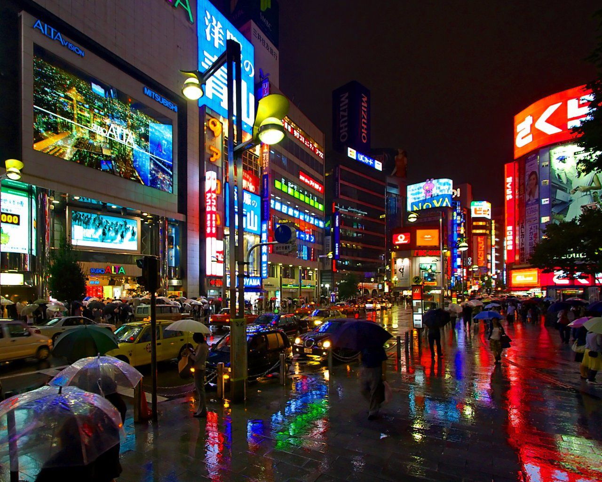

Jane Doe
Email: jane_doe@email.com
Fecha de Nacimiento: 01/05/1996
Teléfono: 918-936-9585
Ciudad: Tokyo, Japón
Trabajando en Lawn N
publicado hace 1 semana...

{{contador}} Me Gusta
Jane Doe: ¡noche lluviosa en Tokio!
Comentarios:Sobre mí
¡Hola a todos! Soy Jane, y actualmente vivo en la vibreante y emocionate ciudad de Tokio, Japón. Me encanta copturar la esencia de la vida urbana a través de mi lente, explorando el contraste entre la arquitectura moderna y las tradiciones centenarias que conviven en esta metrópolis única. Desde rascacielos deslumbrantes y calles bulliciosas hasta templos serenos y jardines tranquilos, encuentro inspiración en cada rincón de esta increíble ciudad.